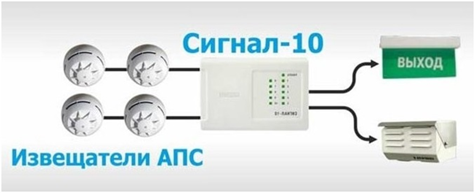
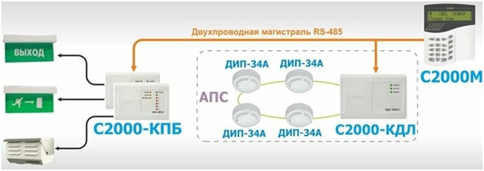
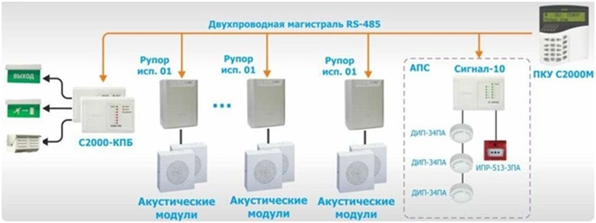
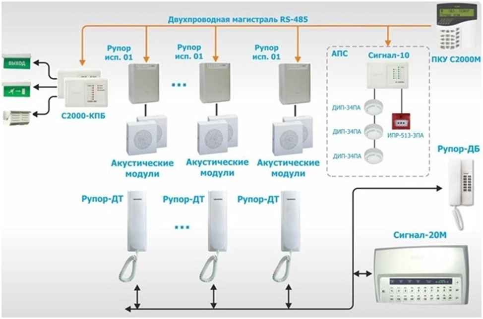
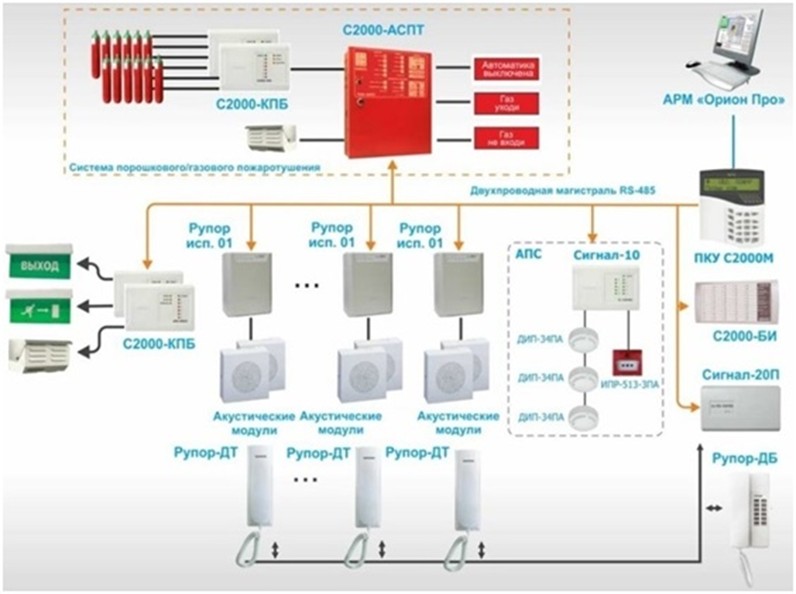

Система оповещения и управления эвакуацией людей при пожаре

В ходе данного занятия вы познакомитесь с понятием системы оповещения и управления эвакуацией людей при пожаре (СОУЭ), ее типами и основными элементами системы. Мы постараемся изложить материал в доступной форме, избегая сложных технических терминов, чтобы вы смогли получить базовые знания в области обеспечения пожарной безопасности и уверенно применять их в своей профессиональной деятельности.
Как организовать быструю и при этом безопасную и грамотную эвакуацию людей? Ведь для многих людей, которые впервые оказываются в зданиях, сооружениях, эвакуационные пути и выходы могут быть незнакомыми и представлять собой сложный лабиринт.
Даже для сотрудников предприятий и организаций, прошедших обучение пожарно-техническому минимуму и обладающих базовыми навыками действий в случае пожара, эвакуация может быть непростой задачей из-за паники и страха за свою жизнь. Если здание или сооружение не оборудовано системой оповещения и управления эвакуацией (СОУЭ), которая часто становится настоящим спасением во время пожара, покинуть горящее и задымлённое помещение может быть очень сложно.
В состав таких систем входят устройства управления СОУЭ, а также специализированное оборудование: датчики, сигнализаторы, световые табло, указатели направления эвакуации, акустические системы. Они предназначены для быстрого и эффективного информирования дежурного персонала, работников, посетителей и других людей, находящихся в здании или сооружении, о пожаре, а также о необходимости и порядке эвакуации, безопасных путях и выходах.
Система оповещения и управления эвакуацией (СОУЭ) — это неотъемлемая часть системы безопасности зданий и сооружений любого назначения, где находятся люди. Она предназначена для того, чтобы автоматически и оперативно оповещать людей о чрезвычайных ситуациях, а также координировать их действия по эвакуации из задымлённых или загазованных помещений на улицу, территорию предприятия или в безопасные зоны — на балконы, эстакады или некоторые виды крыш. В некоторых случаях эвакуация может осуществляться в смежные пожарные отсеки, помещения, отделённые стенами, перегородками и перекрытиями с установленными в них противопожарными дверями, воротами, люками и окнами. Это позволяет предотвратить распространение пожара.
Существует пять различных типов систем оповещения и управления эвакуацией (СОУЭ), которые значительно отличаются по своему техническому оснащению и методам работы. Эти системы предназначены для оповещения людей о чрезвычайной ситуации и управления их эвакуацией.
Выбор конкретной системы зависит от характеристик защищаемого объекта, таких как этажность, площадь, категория взрывопожарной опасности, вместимость, количество посетителей, больничных коек, зрительских мест или учащихся. Поэтому необходимо детально рассмотреть каждый тип СОУЭ.
СОУЭ 1 типа
Все виды таких систем неразрывно связаны с системами автоматической пожарной сигнализации, установленными в зданиях, из которых необходимо организовать эвакуацию в случае возникновения пожара.
Автоматическая пожарная сигнализация — это первичная система, которая запускает различные устройства и механизмы, такие как системы оповещения и управления эвакуацией (СОУЭ), насосные станции пожаротушения с дренчерными оросителями, противопожарный водопровод зданий и сооружений, а также газовые и порошковые установки пожаротушения.
В простых по конструкции и составу системах автоматической пожарной сигнализации, которые защищают одно или несколько помещений или зданий, элементы системы оповещения и управления эвакуацией являются неотъемлемой частью системы.
Более сложные и многофункциональные системы оповещения и управления эвакуацией, предназначенные для защиты крупных объектов и комплексов зданий различного назначения, как правило, проектируются и устанавливаются отдельно, но всегда имеют связь и интеграцию с системой автоматической пожарной сигнализации.

Система оповещения и управления эвакуацией (СОУЭ) первого типа — это система, которая оповещает людей о пожаре с помощью звуковых сигналов. Она может использовать различные звуковые устройства, такие как сирены, ревуны и звонки, чтобы предупредить о срабатывании датчиков дыма или тепловых извещателей. Эти устройства также могут сообщать о необходимости срочно покинуть помещения, которые защищает система автоматической пожарной сигнализации (АПС), а затем и здание или сооружение.
Преимущество СОУЭ первого типа заключается в простоте конструкции и низкой стоимости. Для установки такой системы не требуется много затрат на приобретение звуковых устройств и их монтаж. Однако у этой системы есть и недостатки.
Основной недостаток СОУЭ первого типа — это низкая информативность. Люди, находящиеся в здании, не всегда могут понять, что происходит, и не получают чёткие инструкции о том, что им нужно делать. Также отсутствуют световые или голосовые подсказки, которые могли бы помочь людям сориентироваться и успешно эвакуироваться. Из-за этих недостатков эффективность СОУЭ первого типа не так высока, как у других типов систем. По сути, это просто дублирование сигнала пожарной тревоги в помещениях и основных путях эвакуации, который реализован в составе системы АПС.
Применяется, как правило, в небольших зданиях и помещениях, как правило без постоянного присутствия персонала.
СОУЭ 2 типа
Эти системы оповещения представляют собой комбинацию звукового сигнала первого типа и световых указателей «Выход», которые размещаются над дверными проёмами в помещениях, в коридорах у выходов на лестничные клетки, переходы и непосредственно на улицу или территорию предприятия или организации.

В соответствии с правилами, в составе систем оповещения и управления эвакуацией второго типа разрешено устанавливать стационарные световые указатели направлений эвакуации. Это значительно повышает эффективность системы даже в условиях задымления. Ведь на практике объекты, оснащённые такими системами оповещения, не имеют инженерного оборудования для удаления дыма и принудительного притока свежего воздуха из атмосферы.
Несомненно, дополнительное световое обозначение эвакуационных путей и выходов повышает шансы людей, находящихся в зданиях и сооружениях, быстро найти выход на свежий воздух.
Применяется, как правило, в офисных помещениях, небольшой площади, складах без постоянного присутствия рабочих мест.
СОУЭ 3 типа
Этот вид систем существенно отличается от предыдущих. В нём основной способ оповещения людей о произошедшем и необходимости организованно покинуть здание — это речевое сообщение, которое автоматически передаёт заранее подготовленные тексты о необходимости эвакуации. Звуковое оповещение допустимо только в определённых зонах в соответствии с техническим заданием заказчика/собственника и решением проектной организации.

В состав системы оповещения и управления эвакуацией третьего типа также входят:
- обязательные элементы — световые указатели «Выход»;
- дополнительные элементы — статические световые указатели направления эвакуации, система оповещения о пожаре по отдельным зонам защищаемого объекта, прямая связь с диспетчерской.
Преимущества и недостатки.
Речевые системы оповещения (СОУЭ) 3–5 типа должны предоставлять максимально полную информацию в зависимости от ситуации на объекте.
Данные, которые передаются через СОУЭ, должны быть адаптированы к особенностям планировки помещений и утверждённым планам эвакуации на каждом этаже. Ответственность за это лежит на владельцах зданий и сооружений, руководителях предприятий и организаций, а также на специализированных проектных и монтажно-наладочных компаниях, имеющих необходимые допуски и лицензии.
СОУЭ 4 типа
Эта система оповещения речью похожа на третью, но имеет технические улучшения в некоторых аспектах. Они позволяют передавать разные сообщения о тревоге для дежурных, обслуживающего персонала и отдельных групп посетителей. Также они помогают организовать эвакуацию людей из разных частей здания (пожарных отсеков).

Отличия, преимущества и недостатки.
Световые/фотолюминесцентные указатели, которые помогают ориентироваться при эвакуации.
Здания и сооружения разделены на зоны оповещения. Эти зоны охватывают этажи, пожарные отсеки, части комплекса строений и группы помещений, которые находятся рядом с одним из эвакуационных выходов.
Все зоны оповещения должны быть напрямую связаны с пультом управления инженерными системами — диспетчерской.
СОУЭ 5 типа
Более сложная техническая система, которая позволяет более точно контролировать процесс эвакуации. Для этого были добавлены новые функции к требованиям для систем оповещения и управления эвакуацией (СОУЭ) предыдущего типа:
- Световые указатели, которые показывают направление движения. Они могут менять своё значение по команде из диспетчерской (динамические указатели).
- Разработка различных сценариев эвакуации из любой зоны оповещения в зависимости от ситуации во время пожара.
- Координация и централизованное управление всеми инженерными системами противопожарной защиты здания или сооружения из помещения диспетчерской или пожарного поста.

Системы оповещения и управления эвакуацией (СОУЭ) 5-го типа, а также системы 4-го типа, которые обязательно разделены на отдельные зоны тревожного оповещения, позволяют:
- оперативно передавать информацию дежурному техническому и обслуживающему персоналу, сотрудникам охраны и безопасности, членам добровольных пожарных дружин, которые находятся в разных частях здания или комплекса строений. Это помогает предотвратить панику, избежать столкновения эвакуационных потоков и скопления людей у одного из выходов, что может нарушить организованный процесс эвакуации.
- предоставлять точные и актуальные сведения о направлениях движения для групп людей, находящихся в разных зонах оповещения, к ближайшему эвакуационному выходу и последовательности прохождения маршрута.
- Речевые СОУЭ 4-го и 5-го типов часто используются для трансляции музыкальных программ, объявлений и рекламных текстов. Это не противоречит нормам, но при этом повышает ценность этих дорогостоящих технических систем для собственников зданий и руководителей предприятий и организаций.
СОУЭ 3-5 типов, как правило применяются, на объектах с массовым прибывание людей, таких как бизнес-центры, торговые центры, здания социального назначения, логистические комплексы. Конечный выбор типа оповещения лежит на проектной организации.
Вопросы для самоконтроля:
1) Сколько типов СОУЭ существует?
2) Отличия 1 и 2 типов оповещения
3) Можно ли использовать трансляцию рекламных текстов в системах оповещения